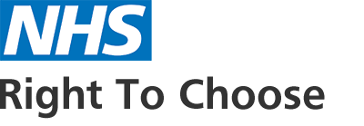

Potential ADHD access routes for clinical discussion.
The pre-pilot does not decide who gets assessed, prioritised or routed. It helps partners understand whether there is a recognisable ADHD-and-addiction cohort, then lets the ADHD Team and clinical partners define the safest route.
Possible routes
- existing CPFT pathway
- Right to Choose advice
- QbTest / QbTech support if clinically appropriate
- GP shared-care considerations
Clear limits
- OTOS does not instruct GPs
- OTOS does not choose RTC providers
- OTOS does not create clinical priority
- OTOS does not hold prescribing responsibility
